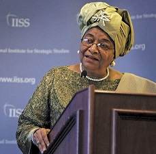

Independence Day : July 26, 1847
Capital City : Monrovia
Population : 4.2 Million
Area : 99,067 sq km (38,250 sq miles)
Languages : English, 29 African languages belonging to
the Mande, Kwa or Mel linguistic groups
Major religions : Christianity, Islam, indigenous beliefs
Life expectancy : 56 years (men), 59 years (women)
Currency : Liberian dollar
The founding of Liberia in the early 1800s was motivated by the domestic politics of slavery and race in the United States as well as by U.S. foreign policy interests. In 1816, a group of white Americans founded the American Colonization Society (ACS) to deal with the “problem” of the growing number of free blacks in the United States by resettling them in Africa. The resulting state of Liberia would become the second (after Haiti) black republic in the world at that time.
President: Ellen Johnson Sirleaf Ellen Johnson Sirleaf became Africa's first female president in 2005, two years after the end of a brutal 14-year conflict. She is due to step down following elections in October 2017. She was awarded the Nobel peace prize in 2011 for what the prize committee said were her efforts to secure peace, promote economic and social development and strengthen the position of women. Born in 1938, she is a widowed mother-of-four.
